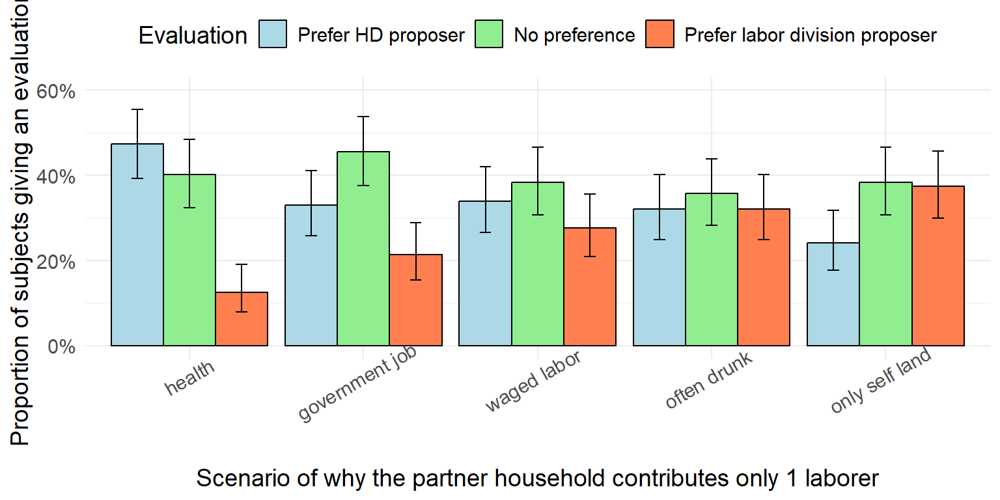
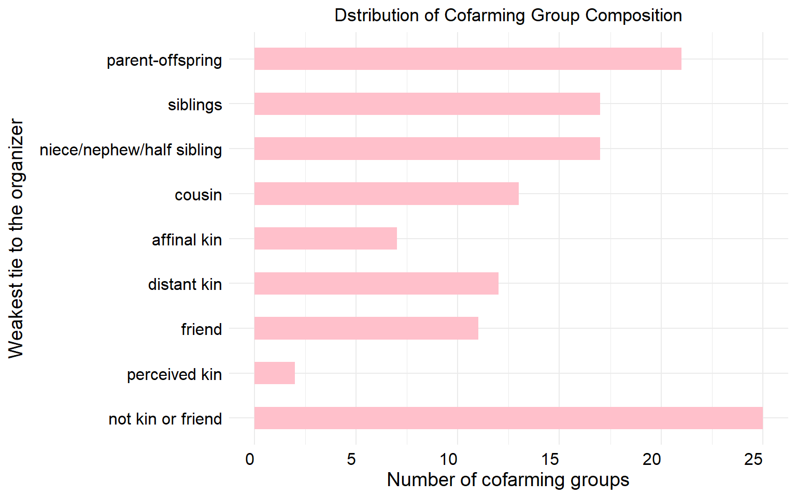
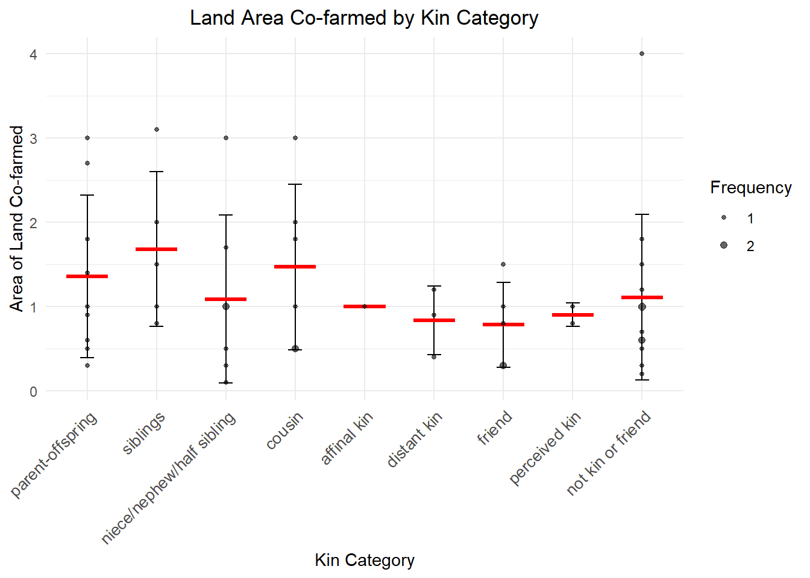
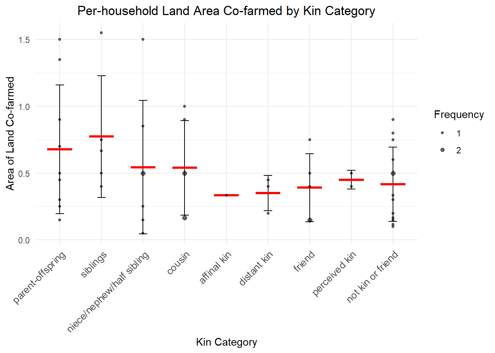
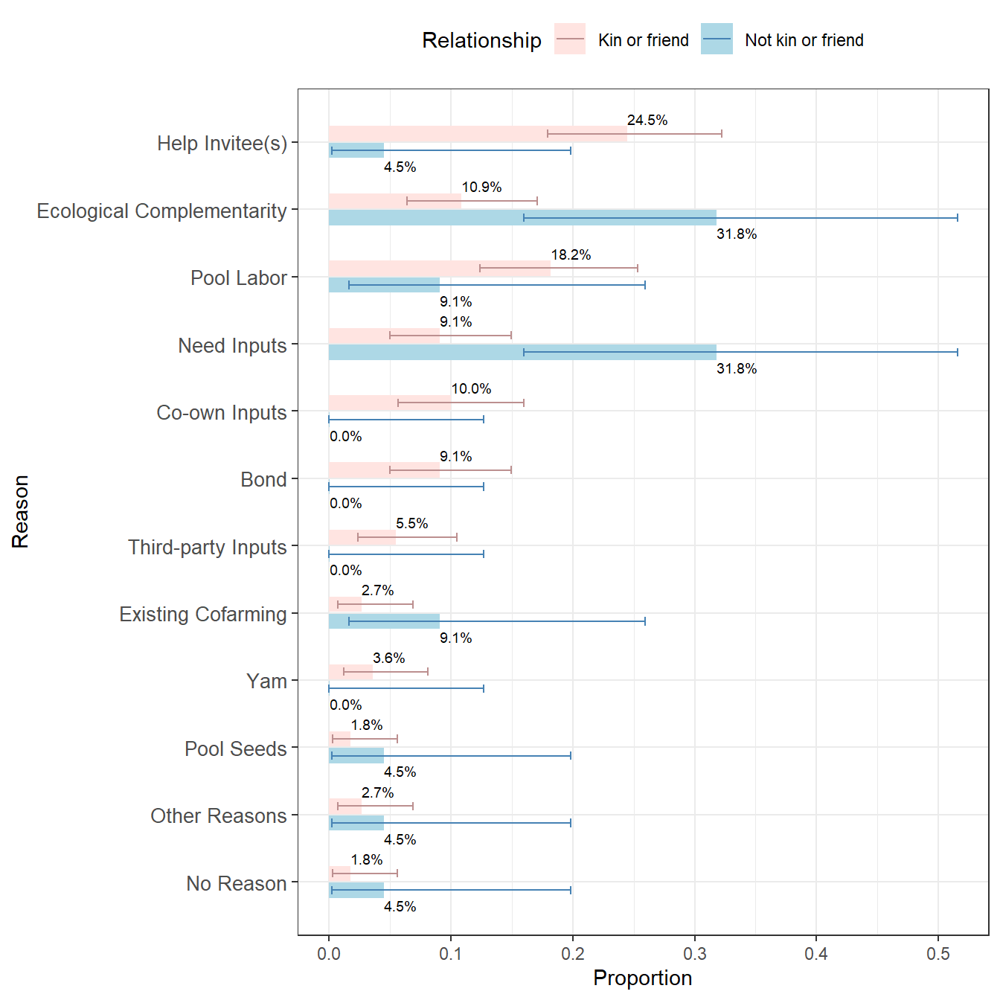
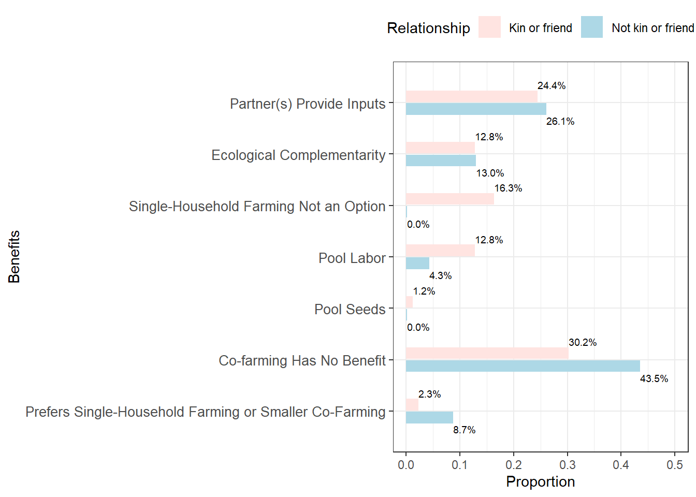

library(nnet)
library(openxlsx)
library(xtable)
library(dplyr)##
## Attaching package: 'dplyr'## The following objects are masked from 'package:stats':
##
## filter, lag## The following objects are masked from 'package:base':
##
## intersect, setdiff, setequal, unionlibrary(tidyr)
library(purrr)
#library(magrittr); requireNamespace("tidyr");
library(ggplot2)
library(ggpattern)
library(polycor)
library(data.table)##
## Attaching package: 'data.table'## The following object is masked from 'package:purrr':
##
## transpose## The following objects are masked from 'package:dplyr':
##
## between, first, lastlibrary(stringr)
library(stringi)
library(forcats)
library(here)## here() starts at C:/Users/Minhua Yan/Desktop/HDsignallibrary(binom)
library(scales)##
## Attaching package: 'scales'## The following object is masked from 'package:purrr':
##
## discard# import the data
df_ttpc = read.xlsx(here("thirdPartyPartnerChoice.xlsx"), sheet=2)
# Reorder Context levels
context_order = c("health", "government job", "waged labor", "often drunk", "only self land")
evaluation_order = c("HD","SAME","LB")
n_SBJ = 112
df_ttpc = df_ttpc %>%
mutate(Context = factor(Context, levels = context_order, ordered = TRUE),
Evaluation = factor(Evaluation, levels = evaluation_order, ordered = TRUE)) %>%
arrange(Context, Evaluation) %>%
# the above procedure reorders the context and then the evaluation
mutate(Evaluation = recode(Evaluation, "HD" = "Prefer HD proposer", "SAME" = "No preference", "LB" = "Prefer labor division proposer")) %>%
mutate(Proportion = Count/n_SBJ)
#%>%# calculate confidence intervals and add error bars
x = df_ttpc$Count
n = rep(n_SBJ, 15)
ci_results = t(sapply(1:length(x), function(i) {
test_result <- prop.test(x[i], n[i], conf.level = 0.90) # Apply prop.test() for each proportion
c(ci_mean = x[i] / n[i], CI_Lower = test_result$conf.int[1], CI_Upper = test_result$conf.int[2])
}))
df_ttpc$ci_mean = ci_results[,1]
df_ttpc$ci_low = ci_results[,2]
df_ttpc$ci_up = ci_results[,3]

# dataframe of land farmed by each kin group
# prepare data
kin_area = kin %>%
filter(area != "NAPP" & div_no_NOorYAMorVEGGIE_diff != "NEED")
kin_area$area = as.numeric(kin_area$area)
kin_area$num_CF_HH <- as.numeric(as.character(kin_area$num_CF_HH))
kin_area <- kin_area %>%
mutate(area_perHH = area / num_CF_HH)# This next section creates plotting dataframes to plot area farmed per CFG
# Count frequency of each area value within each 'involves' group
kin_area_count_CFG <- kin_area %>%
group_by(involves, area) %>%
summarise(freq = n(), .groups = "drop")
# Compute mean and standard deviation per 'involves' group
summary_stats <- kin_area %>%
group_by(involves) %>%
summarise(
mean_area = mean(area),
sd_area = sd(area),
.groups = "drop"
)
# Merge data for plotting
df_plot1 <- left_join(kin_area_count_CFG, summary_stats, by = "involves")
df_plot1$involves <- factor(df_plot1$involves, levels = relation_order)
# Create the plot
ggplot(df_plot1, aes(x = involves)) +
# Error bars (±1 SD)
geom_errorbar(aes(ymin = mean_area - sd_area, ymax = mean_area + sd_area),
width = 0.2, color = "black") +
# Red horizontal line at mean (corrected)
geom_segment(aes(x = as.numeric(involves) - 0.3,
xend = as.numeric(involves) + 0.3,
y = mean_area,
yend = mean_area),
color = "red", linewidth = 1.2) +
# Scatter dots with size = frequency
geom_point(aes(y = area, size = sqrt(freq)),
alpha = 0.6) +
scale_size_continuous(
range = c(1, 2), # Radius: freq = 1 → 1 mm, freq = 2 → 2 mm
breaks = sqrt(c(1, 2)), # Legend: use sqrt(freq) values
labels = c(1, 2), # Show actual frequency values
name = "Frequency"
) +
labs(
title = "Land Area Co-farmed by Kin Category",
x = "Kin Category",
y = "Area of Land Co-farmed"
) +
theme_minimal() +
theme(axis.text.x = element_text(angle = 45, hjust = 1, size=10), plot.title = element_text(hjust = 0.5))
# This next section manipulates the data to plot area farmed per HH
# Count frequency of each area value within each 'involves' group
kin_area_count_HH <- kin_area %>%
group_by(involves, area_perHH) %>%
summarise(freq = n(), .groups = "drop")
# Compute mean and standard deviation per 'involves' group
summary_stats <- kin_area %>%
group_by(involves) %>%
summarise(
mean_area = mean(area_perHH),
sd_area = sd(area_perHH),
.groups = "drop"
)
# Merge data for plotting
df_plot2 <- left_join(kin_area_count_HH, summary_stats, by = "involves")
df_plot2$involves <- factor(df_plot2$involves, levels = relation_order)
# Create the plot
ggplot(df_plot2, aes(x = involves)) +
# Error bars (±1 SD)
geom_errorbar(aes(ymin = mean_area - sd_area, ymax = mean_area + sd_area),
width = 0.2, color = "black") +
# Red horizontal line at mean (corrected)
geom_segment(aes(x = as.numeric(involves) - 0.3,
xend = as.numeric(involves) + 0.3,
y = mean_area,
yend = mean_area),
color = "red", linewidth = 1.2) +
# Scatter dots with size = frequency
geom_point(aes(y = area_perHH, size = freq),
alpha = 0.6) +
scale_size_continuous(
range = c(1, 2), # Radius: freq = 1 → 1 mm, freq = 2 → 2 mm
breaks = sqrt(c(1, 2)), # Legend: use sqrt(freq) values
labels = c(1, 2), # Show actual frequency values
name = "Frequency"
) +
labs(
title = "Per-household Land Area Co-farmed by Kin Category",
x = "Kin Category",
y = "Area of Land Co-farmed"
) +
theme_minimal() +
theme(axis.text.x = element_text(angle = 45, hjust = 1, size=10), plot.title = element_text(hjust = 0.5))
df_CFPrsn = read.xlsx(here("CFP_reason.xlsx"), sheet=1)
# Vector of the column names to sort
cfp_cols <- paste0("CFP", 1:7)
# Sort each row's non-NA values, pad with NA to length 7, and put back
df_CFPrsn <- df_CFPrsn %>%
rowwise() %>%
mutate(across(all_of(cfp_cols), ~ {
vals <- c_across(all_of(cfp_cols)) # extract row values
sorted_vals <- sort(na.omit(vals)) # sort non-NA
padded <- c(sorted_vals, rep(NA, length(vals) - length(sorted_vals)))
padded[cur_column() == cfp_cols] # This line won't work—see below
}))
# sort the CF partnerships based on CFP1 to CFP7
df_CFPrsn <- df_CFPrsn %>%
arrange(across(all_of(cfp_cols)))
# if two CF parnterships performed by the same households are cofarming the same crop type and gave the same reason, treat as duplicate and do not show in the visualization
df_CFPrsn <- df_CFPrsn %>%
mutate(.rowid = row_number()) %>% # preserve current order
group_by(across(all_of(c("crop_type", "CF_reason_byorganizer", cfp_cols)))) %>%
mutate(
.first_row = min(.rowid),
.first_landid = LandID[.rowid == .first_row][1]
) %>%
ungroup() %>%
mutate(
reason = if_else(
.rowid == .first_row,
CF_reason_byorganizer,
paste("same as", .first_landid)
)
) %>%
select(-all_of(c(".rowid", ".first_row", ".first_landid")))
df_CFPrsn <- df_CFPrsn %>%
filter(!is.na(RSN))reason_counts_by_rel <- df_CFPrsn %>%
# Step 1: split comma-separated RSN values into lists
mutate(RSN_split = str_split(RSN, ",")) %>%
# Step 2: unnest so each reason has its own row
unnest(RSN_split) %>%
# Step 3: trim spaces
mutate(RSN_split = str_trim(RSN_split)) %>%
# Step 4: create a flag for NON vs Kin/Friend
mutate(rel_type = if_else(relationship == "NON", "Not kin or friend", "Kin or friend")) %>%
# Step 5: count per reason and relationship type
count(RSN_split, rel_type, name = "freq") %>%
arrange(RSN_split, rel_type)
singletons <- reason_counts_by_rel %>%
group_by(RSN_split) %>%
summarise(total_freq = sum(freq, na.rm = TRUE), .groups = "drop") %>%
filter(total_freq == 1) %>%
pull(RSN_split)
# 2) Replace singletons with "Other reasons" and re-aggregate
reason_prop_by_rel <- reason_counts_by_rel %>%
mutate(
RSN_split = if_else(RSN_split %in% singletons, "Other reasons", RSN_split)
) %>%
group_by(RSN_split, rel_type) %>%
summarise(freq = sum(freq, na.rm = TRUE), .groups = "drop") %>%
# 3) compute prop within each relationship
group_by(rel_type) %>%
mutate(prop = round(freq / sum(freq, na.rm = TRUE), 3)) %>%
ungroup()
rsn_order = c("Help Invitee(s)","Ecological Complementarity", 'Pool Labor','Need Inputs','Co-own Inputs', 'Bond', 'Third-party Inputs', "Existing Cofarming", "Yam", "Pool Seeds", "Other Reasons", "No Reason")
reason_prop_by_rel$RSN_split = stri_replace_all_regex(reason_prop_by_rel$RSN_split,
pattern=c('HELPCFP','Complement','POOLLB','NEEDinput','COOWNinput','Bond','TRDPLD-CFG', 'EXISTCF', "YAM", "POOLSEED", "Other reasons", "NOREASON"),
replacement=rsn_order,
vectorize=FALSE)
reason_prop_with_err <- reason_prop_by_rel %>%
# Ensure the two keys exist and fill missing combos with freq = 0
complete(rel_type, RSN_split, fill = list(freq = 0)) %>%
group_by(rel_type) %>%
mutate(
n_total = sum(freq, na.rm = TRUE),
x = freq,
p = if_else(n_total > 0, x / n_total, NA_real_)
) %>%
rowwise() %>%
mutate(
CI_lower = if (n_total > 0) binom.confint(x, n_total, method = "exact", conf.level = 0.90)$lower else NA_real_,
CI_upper = if (n_total > 0) binom.confint(x, n_total, method = "exact", conf.level = 0.90)$upper else NA_real_
) %>%
ungroup() %>%
mutate(
prop_label = percent(p, accuracy = 0.1)
)gaps <- paste0("<<gap_", seq_len(length(rsn_order) + 1), ">>")
# interleave: gap1, reason1, gap2, reason2, ..., gapN, reasonN, gapN+1
rsn_order_with_gaps <- as.vector(rbind(gaps[-length(gaps)], rsn_order))
rsn_order_with_gaps <- c(rsn_order_with_gaps, tail(gaps, 1))
# reverse so the first reason appears at TOP after coord_flip()
levels_with_gaps <- rev(rsn_order_with_gaps)
# --- build plotting data; keep factor THROUGH complete() ---
plot_dat2 <- reason_prop_with_err %>%
select(RSN_split, rel_type, prop, CI_lower, CI_upper) %>%
mutate(
RSN_split = factor(RSN_split, levels = levels_with_gaps),
rel_type = factor(rel_type, levels = c("Not kin or friend","Kin or friend"))
) %>%
complete(
RSN_split = factor(levels_with_gaps, levels = levels_with_gaps), # <- pass factor
rel_type = levels(rel_type),
fill = list(prop = 0)
) %>%
mutate(RSN_split = factor(RSN_split, levels = levels_with_gaps),
rel_type = factor(rel_type, levels = c("Not kin or friend","Kin or friend"))) # reassert
eps <- 0.001 # tiny visible height for zeros
show_err <- c("Help Invitee(s)", "Ecological Complementarity", "Pool Labor", "Need Inputs", "Co-own Inputs", 'Bond', 'Third-party Inputs', "Existing Cofarming", "Yam", "Pool Seeds", "Other Reasons", "No Reason")
plot_dat2 <- plot_dat2 %>%
mutate(prop_plot = if_else(prop == 0, eps, as.numeric(prop))) %>%
mutate(
show_err = !grepl("^<<gap_\\d+>>$", RSN_split) & as.character(RSN_split) %in% show_err,
CI_lower_plot = ifelse(show_err, CI_lower, NA_real_),
CI_upper_plot = ifelse(show_err, CI_upper, NA_real_)
) %>%
mutate(RSN_split = factor(RSN_split, levels = levels_with_gaps),
rel_type = factor(rel_type, levels = c("Not kin or friend","Kin or friend"))) # reassert
# helper to hide gap labels
axis_lab <- function(x) ifelse(grepl("^<<gap_\\d+>>$", x), "", x)## Warning: `position_dodge()` requires non-overlapping x intervals.
# fisher's exact test for whether the prevalance of a reason differs based on relationship type
results <- reason_prop_with_err %>%
group_by(RSN_split) %>%
summarise(
test = list({
# Build 2×2 table for this reason
tab <- matrix(
c(
sum(freq[rel_type == "Kin or friend"]), # successes in kin/friend
unique(n_total[rel_type == "Kin or friend"]) - sum(freq[rel_type == "Kin or friend"]), # failures in kin/friend
sum(freq[rel_type == "Not kin or friend"]), # successes in not kin/friend
unique(n_total[rel_type == "Not kin or friend"]) - sum(freq[rel_type == "Not kin or friend"]) # failures in not kin/friend
),
nrow = 2,
byrow = TRUE,
dimnames = list(
rel_type = c("Kin/friend", "Not kin/friend"),
outcome = c("Reason present", "Reason absent")
)
)
fisher.test(tab) # use exact test (robust with small n and 0’s)
}),
.groups = "drop"
) %>%
mutate(
p_value = map_dbl(test, ~ .x$p.value),
estimate = map_dbl(test, ~ ifelse(is.null(.x$estimate), NA_real_, .x$estimate)),
conf_low = map_dbl(test, ~ ifelse(is.null(.x$conf.int), NA_real_, .x$conf.int[1])),
conf_high = map_dbl(test, ~ ifelse(is.null(.x$conf.int), NA_real_, .x$conf.int[2]))
) %>%
select(-test)
results## # A tibble: 12 × 5
## RSN_split p_value estimate conf_low conf_high
## <chr> <dbl> <dbl> <dbl> <dbl>
## 1 Bond 0.212 Inf 0.452 Inf
## 2 Co-own Inputs 0.210 Inf 0.510 Inf
## 3 Ecological Complementarity 0.0185 0.266 0.0801 0.928
## 4 Existing Cofarming 0.194 0.284 0.0305 3.60
## 5 Help Invitee(s) 0.0439 6.77 0.991 292.
## 6 Need Inputs 0.00903 0.218 0.0628 0.782
## 7 No Reason 0.424 0.393 0.0196 24.0
## 8 Other Reasons 0.522 0.592 0.0449 32.4
## 9 Pool Labor 0.367 2.21 0.471 21.0
## 10 Pool Seeds 0.424 0.393 0.0196 24.0
## 11 Third-party Inputs 0.589 Inf 0.231 Inf
## 12 Yam 1 Inf 0.129 Inf# Distribution of non-organizers' reported benefits of CF compared to IF
df_CFPbnft = read.xlsx(here("CFP_reason.xlsx"), sheet=1) %>%
select(LandID, relationship, RSN, CF_benefit_byNONorganizer) %>%
filter(!is.na(CF_benefit_byNONorganizer)) %>%
mutate(CF_benefit_byNONorganizer = recode(CF_benefit_byNONorganizer,
"PRFIF" = "PRFIForLSHH",
"PRFLSHH" = "PRFIForLSHH"))
benefit_by_rel <- df_CFPbnft %>%
# Step 1: split comma-separated benefits values into lists
mutate(BNFT_split = str_split(CF_benefit_byNONorganizer, ";")) %>%
# Step 2: unnest so each reason has its own row
unnest(BNFT_split) %>%
# Step 3: trim spaces
mutate(BNFT_split = str_trim(BNFT_split)) %>%
# Step 4: create a flag for NON vs Kin/Friend
mutate(rel_type = if_else(relationship == "NON", "Not kin or friend", "Kin or friend")) %>%
# Step 5: count per reason and relationship type
count(BNFT_split, rel_type, name = "freq") %>%
arrange(BNFT_split, rel_type) %>%
# 3) compute prop within each relationship
group_by(rel_type) %>%
mutate(prop = round(freq / sum(freq, na.rm = TRUE), 3)) %>%
ungroup()
bnft_order = c("Partner(s) Provide Inputs","Ecological Complementarity", 'Single-Household Farming Not an Option','Pool Labor',"Pool Seeds", "Co-farming Has No Benefit", "Prefers Single-Household Farming or Smaller Co-Farming")
benefit_by_rel$BNFT_split = stri_replace_all_regex(benefit_by_rel$BNFT_split,
pattern=c('INPUT','Ecological Complementarity','IFNP','POOLLB','POOLSEED','NOBNFT','PRFIForLSHH'),
replacement=bnft_order,
vectorize=FALSE)
## prepare plotting
gaps <- paste0("<<gap_", seq_len(length(bnft_order) + 1), ">>")
# interleave: gap1, reason1, gap2, reason2, ..., gapN, reasonN, gapN+1
bnft_order_with_gaps <- as.vector(rbind(gaps[-length(gaps)], bnft_order))
bnft_order_with_gaps <- c(bnft_order_with_gaps, tail(gaps, 1))
# reverse so the first reason appears at TOP after coord_flip()
levels_with_gaps <- rev(bnft_order_with_gaps)
# --- build plotting data; keep factor THROUGH complete() ---
plot_dat <- benefit_by_rel %>%
select(BNFT_split, rel_type, prop) %>%
mutate(
BNFT_split = factor(BNFT_split, levels = levels_with_gaps),
rel_type = factor(rel_type, levels = c("Not kin or friend","Kin or friend"))
) %>%
complete(
BNFT_split = factor(levels_with_gaps, levels = levels_with_gaps), # <- pass factor
rel_type = levels(rel_type),
fill = list(prop = 0)
) %>%
mutate(BNFT_split = factor(BNFT_split, levels = levels_with_gaps),
rel_type = factor(rel_type, levels = c("Not kin or friend","Kin or friend"))) # reassert
eps <- 0.001 # tiny visible height for zeros
plot_dat <- plot_dat %>%
mutate(prop_plot = if_else(prop == 0, eps, as.numeric(prop))) %>%
mutate(BNFT_split = factor(BNFT_split, levels = levels_with_gaps),
rel_type = factor(rel_type, levels = c("Not kin or friend","Kin or friend"))) # reassert
# helper to hide gap labels
axis_lab <- function(x) ifelse(grepl("^<<gap_\\d+>>$", x), "", x)
ggplot(plot_dat, aes(x = BNFT_split, y = prop_plot, fill = rel_type)) +
# real bars
geom_col(
data = dplyr::filter(plot_dat, !grepl("^<<gap_\\d+>>$", BNFT_split)),
position = position_dodge(width=1), width = 0.9
) +
# invisible gap bars (just to reserve space)
geom_col(
data = dplyr::filter(plot_dat, grepl("^<<gap_\\d+>>$", BNFT_split)),
position = position_dodge(width=1), width = 1, alpha = 0
) +
# labels on real bars (left for kin, right for not-kin)
geom_text(
data = dplyr::filter(plot_dat, !grepl("^<<gap_\\d+>>$", BNFT_split)),
aes(
label = scales::percent_format(accuracy = 0.1)(prop),
hjust = ifelse(rel_type == "Kin or friend", 0, 0) # left vs right
),
position = position_dodge(width=2.8),
vjust = 0.5,
size = 2.5
) +
coord_flip() +
ylim(0, 0.5)+
# use cartesian zoom if you want to “clip” without dropping rows:
# coord_cartesian(ylim = c(-0.1, 0.6)) +
scale_x_discrete(
limits = levels_with_gaps, # keep full order incl. gaps
breaks = bnft_order, # ticks only at real reasons
labels = axis_lab,
drop = FALSE
) +
labs(x = "Benefits", y = "Proportion", fill = "Relationship", color = "Relationship") +
# manual colors for bars (fill)
scale_fill_manual(
values = c(
"Kin or friend" = "mistyrose",
"Not kin or friend" = "lightblue"
)
) +
# manual colors for error bars (line color)
scale_color_manual(
values = c(
"Kin or friend" = "rosybrown",
"Not kin or friend" = "steelblue"
)
) +
theme_bw() +
theme(
axis.text.y = element_text(size = 10),
legend.position = "top",
legend.direction = "horizontal"
) +
guides(
fill = guide_legend(reverse = TRUE),
color = guide_legend(reverse = TRUE) # or use "none" to hide duplicate
)## Warning: `position_dodge()` requires non-overlapping x intervals.## Warning: No shared levels found between `names(values)` of the manual scale and the
## data's colour values.## Warning: Removed 1 row containing missing values or values outside the scale range
## (`geom_col()`).## Warning: Removed 1 row containing missing values or values outside the scale range
## (`geom_text()`).